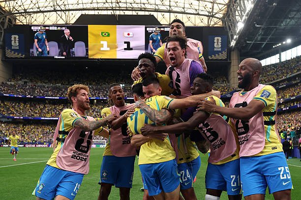

Avistamentos Estranhos
Um Ovni avistado no céu do Mato-Grosso. O adolescente de 18 anos chamados Lucas, avistou a nave passando pelo céu perto da sua residência
Um Ovni avistado no céu do Mato-Grosso. O adolescente de 18 anos chamados Lucas, avistou a nave passando pelo céu perto da sua residência

A única pentacampeã do mundo eliminou o japão em um jogo de muitas emoções. Com uma virada histórica e com gols de Casemiro e Martinelli, o Brasil se classifica para as oitavas de final da Copa do Mundo 2026 e aguarda o vencedor de Noruega x Costa do Marfim.